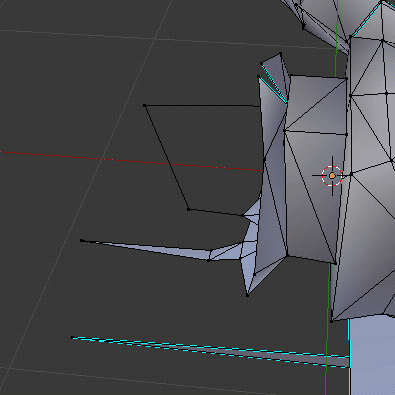
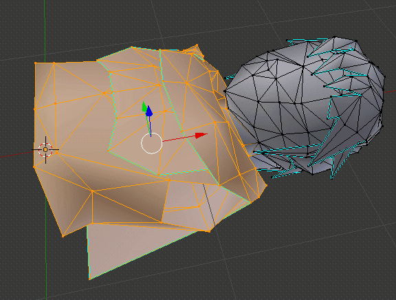

IntroductionThis guide is meant to help you get the new play-as pipeline up and running and do a very basic mod using it. For those coming from the old pipeline, the biggest and most important difference to keep in mind is this: the old pipeline primarily relied on texture mapping, whereas the new pipeline primarily relies on material mapping. Therefore, what the model looks like in textured viewport mode has no bearing on the in-game result, and you should use the material viewport mode as much as possible. Prerequisites
Getting startedOpen DefaultPlayerNoTex.blend in Blender. Look at that, he's folded. Let's unfold him. In Object Mode, attempt to select his skeleton. If his mesh is selected at first, that's okay. Keep clicking his skeleton and it will eventually be selected. Now that his skeleton is selected, we can get around to unfolding him. In the Armature tab, scroll down to where it says Objex. Click the Switch button. With Link unfolded, select his mesh and delete it. We're going to be rigging a new model to this skeleton. Import Marth.obj. It is highly recommended that you practice with Marth.obj if you're new to this pipeline because you may get lost otherwise. Material BasicsSwitch to Material View. We're going to update the materials to be compatible with objex2. Select Marth and go into the Material tab. Now scroll to the bottom of the Material tab where you will find an Init Objex material button. Click it. Go back up to the material list and select the next material in the list, and Init Objex material it. Rinse and repeat for all materials. That isn't necessarily all of them. Check all the other objects in the outliner by selecting them one-by-one.
See, we would have missed these two if we weren't careful. RiggingWith the materials updated, we can now rig the model. Hide everything except Marth and the skeleton. Then select Marth, and then shift-select the skeleton. Marth should have an orange outline and the skeleton should have a yellow outline. If not, keep shift-selecting until this is the case. Then Ctrl P and select With Empty Groups. Press A to clear your selection. Then select Marth and enter Edit Mode. Use the Z key to toggle wireframe view. This is very useful when rigging. We will start with the feet and work our way up. Select the vertices of the left foot (exclude the ankle). Then in the Object Data tab, find Foot.L. Select it, then click Assign. Hover your cursor back over the vertices and press H to hide them. This prevents us from accidentally assigning any one vertex to more than one bone. Rinse and repeat. These belong to Shin.L. Thigh.L and Thigh.R are the trickiest part. (You don't include the vertices closest to the center because those belong to the Waist bone.) When you get them both, you should have something like this left over to assign to Waist. Get everything not part of the torso. Now repeat the same process for the upper body. Work your way up towards the torso from each hand. Something like this for the forearms. And something like this for the shoulders. Notice how we didn't select any vertices that touch the torso. When we hide these vertices, the torso is one clean piece. The long triangle floating below him is assigned to Sheath. Everything below his head at this point can go to Torso. What's this? A triangle was hidden inside the torso? Yes. The game is weird and expects Link to have at least one thing rigged to the Collar bone, so it will be this. If your model doesn't have one, be sure to add one! Link is also expected to always have something rigged to his Hat bone. Allocate one triangle for this purpose. The only geometry remaining is his head. Select it all and assign it to the Head bone. Then use Alt H to unhide everything.Let's see how you did. Back in Object Mode with Marth selected, scroll down in the Object Data tab to the Objex section. Try the Find multiassigned vertices and Find unassigned vertices. If you did everything correctly, it will not report any errors. Rigging (continued)You thought you were finished, but unfortunately not! Hide Marth's main model and unhide Fist.L, Fist.R, and Bottle.Hand.L. Rig each of them to his skeleton the same way you rigged his main mesh to his skeleton. These extra hand models involve one additional step for each. We are rigging them to his skeleton, but we do not want them treated as skeletal meshes. To let the program know this important detail, go into the Object Data tab and enable NOSPLIT and NOSKEL for each, like so: Material PropertiesAnimated Texture PointersLet's configure the eyes. With Marth selected in Object Mode, go to the Material tab and select the Eyes material. Then scroll down to below the Objex section. You want Format = CI8, Pointer = 0x08000000, Priority = 10, Write = Always, and next to Texture bank, open the file EyesBank.png from the tex folder included with Marth. Also note that this is texture priority we are editing. Don't get it confused with material priority. Repeat for the Mouth material, but use Pointer = 0x09000000, Priority = 9, and the provided MouthBank.png for the Texture bank this time. It is very important that the eye/mouth banks are configured in the way we have provided, in order to be compatible with the manifests we use to put the converted object in the game. Empty Material (dummy)The collar and hat triangles we have from before are assigned to a material named empty.dummy. This is so they don't display anything in-game. Empty materials have more useful applications than this, but those advanced features are beyond the scope of this tutorial. ExportingBefore you export, he needs refolded. Unhide everything, select his skeleton, then in the Armature tab, click Switch again. Now go to File -> Export -> Objex2 and export a file. ConvertingRun the generated .objex file through z64convert to produce a .zobj file. Be sure to enable Embed Play-As Data. Pro tip: You can drag-and-drop directly into the window to save time. Putting it in the gameNow you need only feed z64playas the right files. The Play-As ZOBJ is the .zobj we just generated. The Bank ZOBJ is the object_link_boy_optimized.zobj. Pro tip: You can drag-and-drop directly into the window to save time. Finally, you run the game and (hopefully) see that it works. Material NodesTODO(Not needed for this tutorial, but an eventual explanation would help!)TransparencyTODO(Not needed for this tutorial, but an eventual explanation would help!) This is the most I can provide for now: if you need to use a transparent texture on one of your materials, here are the settings I used for TP Link: They work consistently across N64 hardware, emulators, and Wii VC. It is also highly suggested that you give such materials a negative material priority so their geometry is called after the opaque geometry (to prevent transparent materials from culling opaque geometry). I know it's terrifying. Maybe someday the plugin will have a menu containing presets for you to choose from. |
Guides >